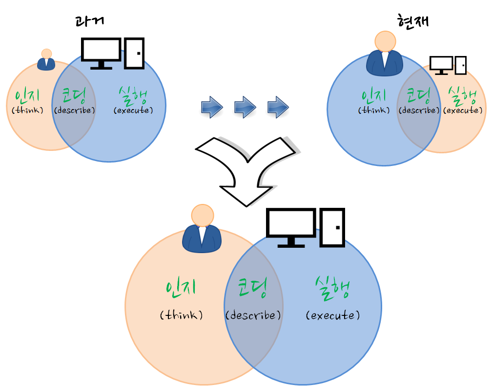

머신러닝 레볼루션 - 머신러닝의 이해와 비즈니스 기회
xwMOOC와 함께하는 한국인 - 기계와의 경쟁을 준비하며
기계와의 경쟁을 준비하며…
“The future is here, it’s just not evenly distributed yet.”
- William Gibson
4차 산업혁명 - 미래 일자리와 인공지능
| EBS 조용한 혁명 (산업혁명) | 아리랑 TV 미래 일자리 |
|---|---|
수학, 통계학, 컴퓨터 과학, …

소프트웨어 카펜트리 5.3
- 파이콘 2015, 라이트닝 토크
- 한국에서 소프트웨어 카펜트리 1년…
- 재현가능한 과학기술 & 슈퍼컴퓨팅
- 데이터과학

재현가능한 과학기술
Data Sharing and Management Snafu in 3 Short Acts
- 공개 과학(Open Science)
- 라이선싱(Licensing)
- 독점 라이선스: 저작권, 상표권, 특허
- 소프트웨어 라이선스
- 콘텐츠 라이선스
- 하드웨어 라이선스
- 비즈니스를 위한 오픈 소스 소프트웨어
xwMOOC 뉴스
- CODE ACROSS & OPEN DATA DAY 2016
- “R과 RStudio 자료처리작업 워크프로우: data.table, tydr, dplyr”
- 2016년 3월 5일 / 장소 숙명여대 오픈스퀘어-D
- 스타트업을 향한 빅데이터, IoT 기술 - 경영학도를 위한 IoT 창업 워크샵
- 일시: 2015년 12월 22-24일
- 장소: 영남대학교 본교(경산) 상경관 신관 156호 전산실
- 한국과학창의재단 - 과학기술드림톡
- 한국통계진흥원에서 발간 통계의 창 (2015년 여름호)
- 통계교육원 > 열린교육방 > e-book 게시판
- 전체 다운로드(100MB)
- 미래인재 데이터과학지 - 교육사례중심
- 이제 글쓰기는 코딩이다. 강서양천신문 (’15년 9월)